SYDE 572 · Introduction to Pattern Recognition · Assignment 1
Distance Minimization and Least-Squares Function Fitting Using Analytical and Numerical Methods
IEEE-inspired layout for design review
Abstract—This report studies two optimization tasks. Part I finds the shortest Euclidean distance from five supplied points to the parabola \(y=x^2+5\), using an analytical stationary-point condition, Newton–Raphson iteration, and golden-section search. The methods are then tested on exponential, logarithmic, rational, and radical functions. Part II fits a line and a parabola to four observations by minimizing the mean squared error. Analytical normal equations are compared with coordinate-wise Newton–Raphson updates that optimize one coefficient at a time while holding the other coefficients fixed.
Index Terms—Newton–Raphson, golden-section search, squared distance, least squares, mean squared error, coordinate-wise optimization.
I. Part I — Shortest Distance to a Function
The first task considers the five points \((0,0)\), \((-4,0)\), \((-8,0)\), \((2,0)\), and \((6,0)\). For each supplied point, the objective is to locate the point on \(f(x)=x^2+5\) that gives the minimum Euclidean distance. Squared distance is used throughout because the square-root function is strictly increasing and therefore does not change the location of the minimizer.
II. Analytical Formulation
Let the supplied point be \(P=(a,0)\) and an arbitrary point on the parabola be \(Q=(x,x^2+5)\). The squared-distance objective is
Differentiation gives \(D'(x)=4x^3+22x-2a\). Every candidate minimizer therefore satisfies \(2x^3+11x-a=0\). Moreover, \(D''(x)=12x^2+22>0\) for every real \(x\), so the objective is strictly convex and each real stationary point is the unique global minimizer.
| Given point \(P\) | Optimal \(x^*\) | Closest point \(Q\) | Minimum distance |
|---|---|---|---|
| \((0,0)\) | 0.00000 | \((0.00000,5.00000)\) | 5.00000 |
| \((-4,0)\) | −0.35547 | \((-0.35547,5.12636)\) | 6.28985 |
| \((-8,0)\) | −0.67208 | \((-0.67208,5.45169)\) | 9.13342 |
| \((2,0)\) | 0.18074 | \((0.18074,5.03267)\) | 5.35140 |
| \((6,0)\) | 0.51990 | \((0.51990,5.27030)\) | 7.60313 |
III. Part I Numerical Methods
A. Newton–Raphson Method
For a general function \(y=f(x)\) and point \((x_0,y_0)\), define \(D(x)=(x-x_0)^2+[f(x)-y_0]^2\). Its first two derivatives are
The next iterate is \(x_{k+1}=x_k-D'(x_k)/D''(x_k)\). For the supplied parabola, the program starts from \(x_0=0\), stops when \(|x_{k+1}-x_k|<10^{-7}\), and imposes a 100-iteration limit. A curvature guard stops the calculation if \(|D''(x_k)|<10^{-12}\).
| \(k\) | \(x_k\) | \(D(x_k)\) | \(D'(x_k)\) | \(D''(x_k)\) |
|---|---|---|---|---|
| 0 | 0.000000 | 41.000000 | 8.000000 | 22.000000 |
| 1 | −0.363636 | 39.562940 | −0.192337 | 23.586777 |
| 2 | −0.355482 | 39.562155 | −0.000288 | 23.516409 |
| 3 | −0.355470 | 39.562155 | −6.40×10−10 | 23.516304 |
B. Golden-Section Search
Golden-section search needs no derivatives. Starting with a unimodal bracket \([a,b]=[-10,10]\), it evaluates \(x_1=a+r(b-a)\) and \(x_2=b-r(b-a)\), where \(r=(3-\sqrt5)/2\approx0.381966\). If \(D(x_1)<D(x_2)\), the interval becomes \([a,x_2]\); otherwise it becomes \([x_1,b]\). The calculation terminates when \(|b-a|<10^{-7}\), or after 1000 reductions.
| \(k\) | \(a\) | \(b\) | \(x_1\) | \(x_2\) |
|---|---|---|---|---|
| 0 | −10.000000 | 10.000000 | −2.360680 | 2.360680 |
| 1 | −10.000000 | 2.360680 | −5.278640 | −2.360680 |
| 10 | −0.456781 | −0.294169 | −0.394669 | −0.356281 |
| 20 | −0.356281 | −0.354959 | −0.355776 | −0.355464 |
| 39 | −0.355470 | −0.355470 | −0.355470 | −0.355470 |
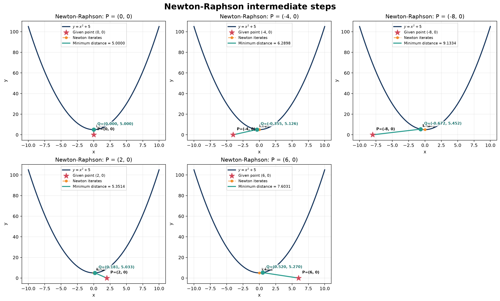
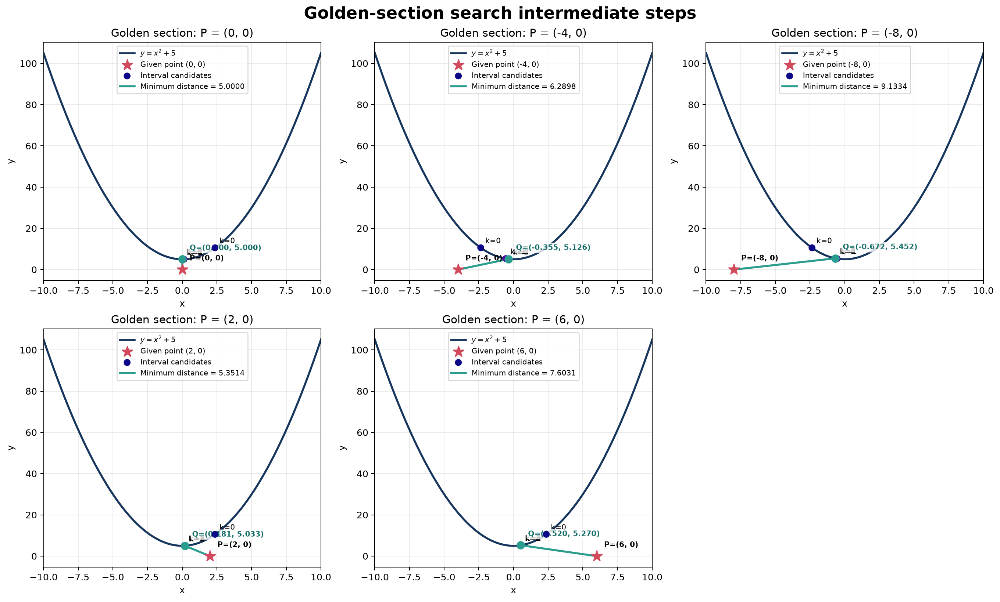
IV. Additional Non-Polynomial Functions
The same five supplied points were tested against four additional function families: exponential, logarithmic, rational (variable in the denominator), and radical. Separate figures are retained for Newton–Raphson and golden-section search so that the behavior of each numerical method remains visible. The shared implementation and complete numerical comparison are available below.
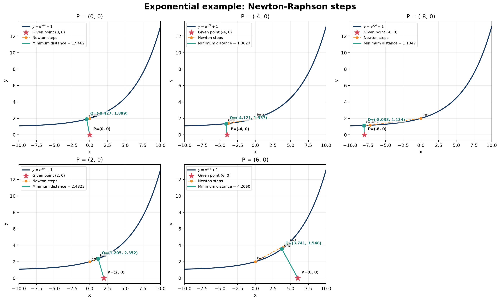
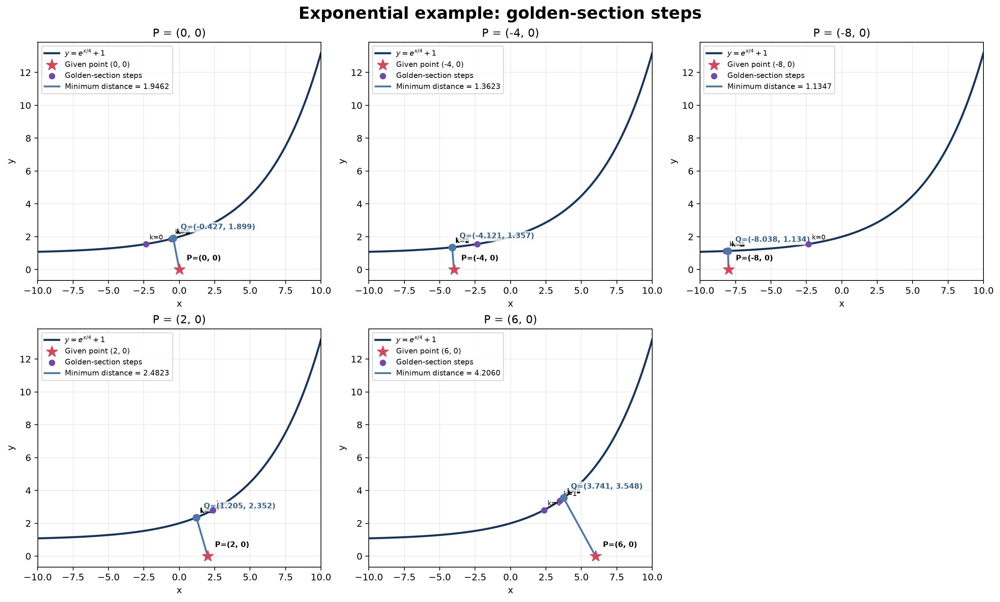
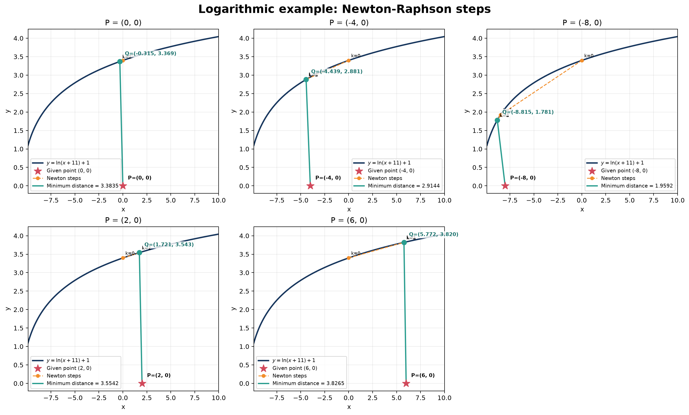
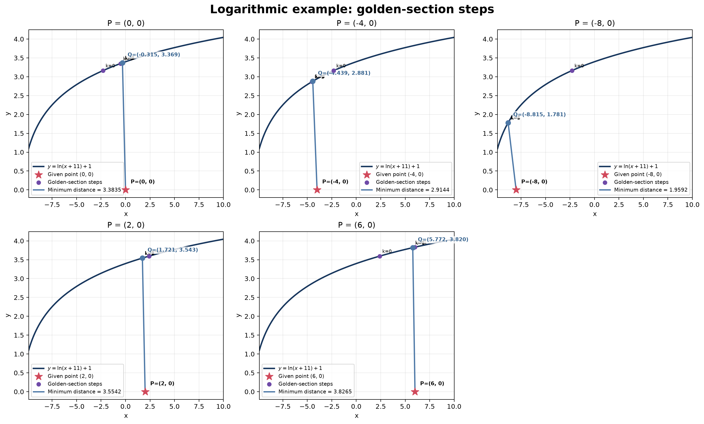
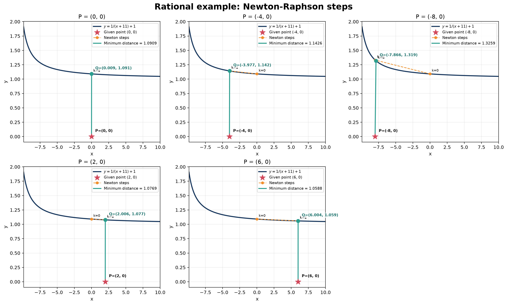
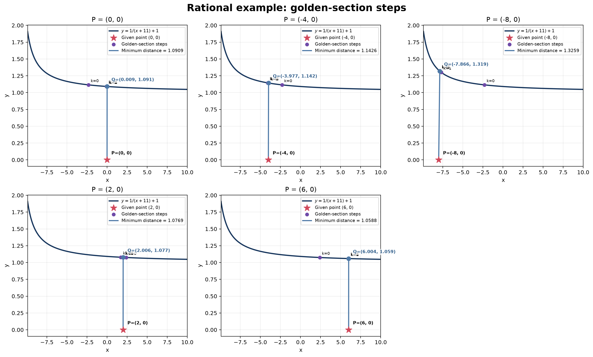
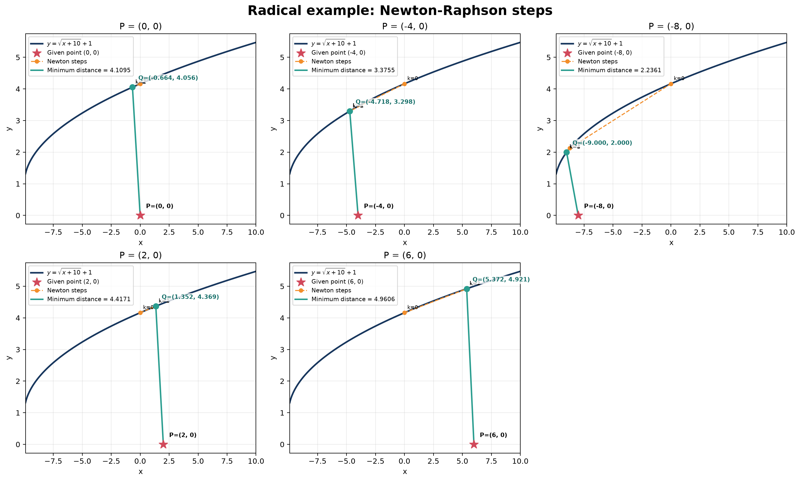
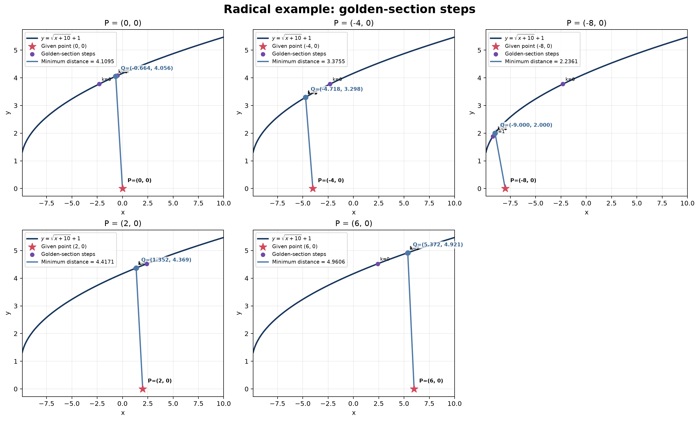
V. Part II — Least-Squares Function Fitting
The second task fits a line and a parabola to \((0,0.5)\), \((1,1.5)\), \((2,3.5)\), and \((3,7.5)\). For a model prediction \(\hat y(x_i)\), let \(e_i=\hat y(x_i)-y_i\). The sum of squared errors is \(\rho=\sum_{i=1}^{4}e_i^2\), and \(\mathrm{MSE}=\rho/4\). Since MSE differs from SSE only by a positive constant, both objectives have the same optimal coefficients.
VI. Analytical Least-Squares Solutions
A. Straight-Line Model
For \(\hat y=c_0+c_1x\), setting the two partial derivatives of the SSE to zero gives \(4c_0+6c_1=13\) and \(6c_0+14c_1=31\). Solving the simultaneous equations produces \(c_0=-0.2\) and \(c_1=2.3\).
B. Quadratic Model
For \(\hat y=c_0+c_1x+c_2x^2\), the stationary equations are \(4c_0+6c_1+14c_2=13\), \(6c_0+14c_1+36c_2=31\), and \(14c_0+36c_1+98c_2=83\). Their solution is \(c_0=0.55\), \(c_1=0.05\), and \(c_2=0.75\).
| Model | Best-fit equation | SSE | MSE |
|---|---|---|---|
| Line | \(\hat y=2.3x-0.2\) | 2.30 | 0.575 |
| Parabola | \(\hat y=0.75x^2+0.05x+0.55\) | 0.05 | 0.0125 |
The quadratic model has the lower MSE because its additional coefficient represents the curvature in the four observations. In matrix form, both analytical calculations satisfy the normal equation \(A^TA\mathbf c=A^T\mathbf y\).
VII. Coordinate-Wise Newton–Raphson
The numerical solution begins with every coefficient equal to zero. Within each sweep, one coefficient is optimized while all other coefficients are held at their newest available values. For design-matrix column \(A_j\), the coordinate update is
For the line, the intercept and slope updates are \(c_0\leftarrow(26-12c_1)/8\), followed by \(c_1\leftarrow(62-12c_0)/28\). For the parabola, the sequential updates are \(c_0\leftarrow(26-12c_1-28c_2)/8\), \(c_1\leftarrow(62-12c_0-72c_2)/28\), and \(c_2\leftarrow(166-28c_0-72c_1)/196\). Iteration stops when the largest coefficient change in a sweep is below \(10^{-10}\).
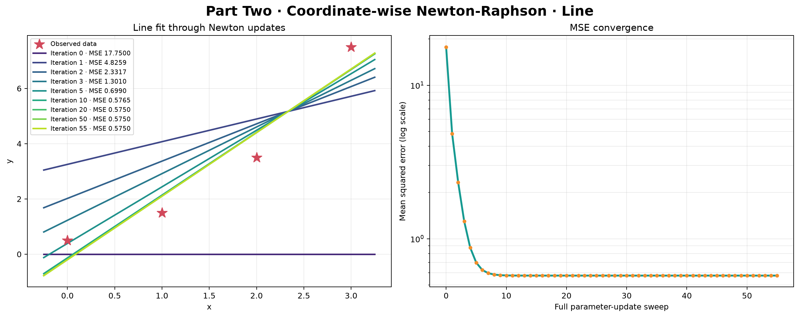
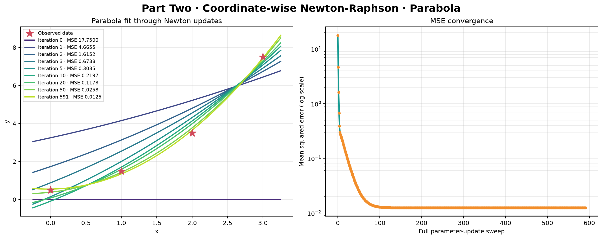
| Model | Sweep | Coefficients | SSE | MSE |
|---|---|---|---|---|
| Line | 0 | \((0,0)\) | 71.000000 | 17.750000 |
| Line | 10 | \((-0.135308,2.272275)\) | 2.305979 | 0.576495 |
| Line | 55 | \((-0.200000,2.300000)\) | 2.300000 | 0.575000 |
| Parabola | 0 | \((0,0,0)\) | 71.000000 | 17.750000 |
| Parabola | 50 | \((0.384549,0.409855,0.641444)\) | 0.103107 | 0.025777 |
| Parabola | 591 | \((0.550000,0.050000,0.750000)\) | 0.050000 | 0.012500 |
VIII. Conclusion
For Part I, analytical differentiation, Newton–Raphson, and golden-section search agree for every supplied point. Strict convexity of the parabola squared-distance objective establishes that each reported stationary point is the unique global minimum. The non-polynomial examples show how the same numerical interfaces extend to functions with different domains and derivative behavior.
For Part II, the analytical normal equations and coordinate-wise Newton–Raphson produce the same fitted coefficients and MSE values. The quadratic fit reduces the MSE from \(0.575\) to \(0.0125\). The numerical implementation directly satisfies the required alternating optimization procedure by updating one model coefficient at a time while holding the remaining coefficients fixed.
IX. Handwritten Work and Supporting Files
The handwritten derivations are embedded for direct comparison with the typed report. Each document can also be opened in a separate tab.
A. Part I Handwritten Solution
Open or download the Part I handwritten PDF.
B. Part II Handwritten Solution
References
- SYDE 572, “Assignment 1,” course assignment document. View assignment PDF.
- Part I Python implementations: Newton–Raphson, golden-section search, and non-polynomial examples.
- Part II Python implementation: coordinate-wise Newton–Raphson.